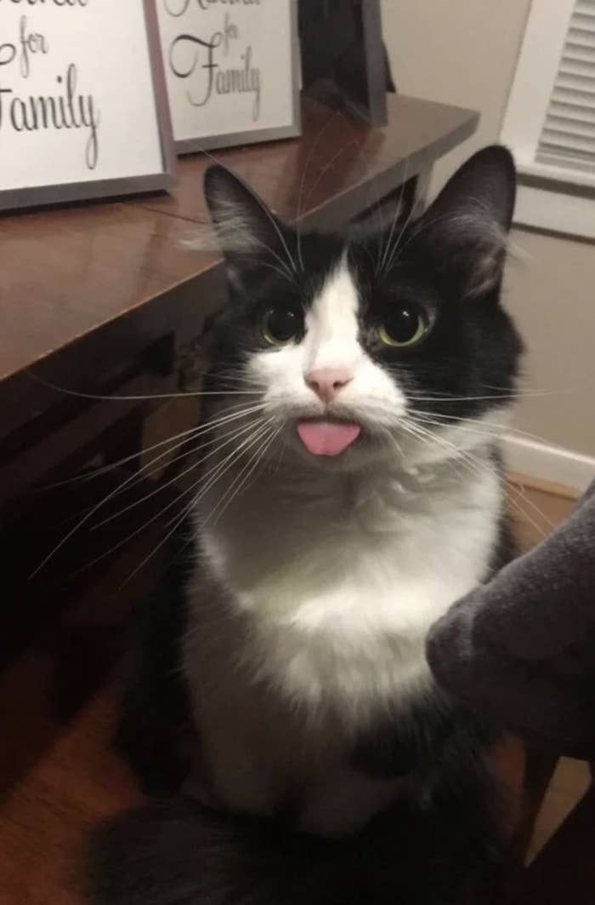

Strona główna
Adoptuj Psa lub Kota
Kontakt
Poznaj nasze psiaki!
🟈 HEJ!! Jestem Ciapka, mam 6 miesięcy, a w
schronisku jestem 3 miesiące. Jestem energicznym
szczeniakiem, który chętnie rozszarpie Twoje
kapcie, meble jak dam radę i firanki. Będe dużym
psiakiem, co jest moją największą zaletą!!
P.S. lubie koty, ale one mnie już niekoniecznie :( 🟈
🟈 Hej!! Jestem Szczyl, mam 3 lata, a w
schronisku jestem od 2 lat. Jestem spokojnym
psem, prędzej obejrze z Tobą serial na kanapie
niż pobiegam za patykiem na spacerze. Więcej już
nie urosne i trzeba mnie dużo czesać. Dogaduje się
z innymi pieskami, kotami, a nawet papugami. 🟈
🟈 Hejka!! Jestem Śmietanka, mam 5 lat, a w
schronisku jestem 2 miesiące. Jestem spokojnym
psiakiem, który mimo swojej spokojnej natury
pójdzie na dłuuugi spacer, a najlepiej z dużą ilością
ludzi i piesków. Jestem małym psem, trzeba czesać
moje gęste włosy i dogadam się z każdym! 🟈
🟈 HEEEJ!1!! Jestem Bombardinio, mam 4 miesięce,
a w schronisku jestem od urodzenia. Mam duuzo
energi, kocham być na podwórku i uwielbiam
wszystkie zabawki!! (szczególnie skarpety) Urosne
na największego psa na świecie! Dogaduje się z
każdym, ale najbardziej lubie wiewiórki 🟈
🟈 Witam!! Jestem Mysza, mam 10 lat, a w
schronisku jestem od 3 lat. Jestem starszym psem
więc mimo, że kocham zabawę, to nie zawsze mam
na nią energię, ale to nic bo kocham leżeć i nic nie
robić tak samo jak się bawić! Nie dogaduje się z
większością zwierzaków, bo się mnie boją :( 🟈
🟈 Hejka!! Jestem Bunia, mam 7 lat, a w
schronisku jestem 5 lat. Jestem energicznym
psiakiem i zaskoczę Cie swoimi sztuczkami!!
Pomijając te nudne, w stylu daj łape, reaguje nawet
na backflipa!!!! Nie lubie się z innymi psami, ale
jestem wytrenowana by na nie nie szczekać. 🟈
Poznaj nasze kociaki!
🟈 HEJ!! Jestem Dzaga, mam 11 miesięcy, a w
schronisku jestem odkąd pamiętam. Jestem
pełna energii i kooocham skakać po ścianach.
Lubię też kocimiętke i oduczam się niszczenia
firanek czy rolet. Lubie się z innymi kotkami,
a psy terroryzuje jak tylko mam okazję. 🟈

🟈 Hej! Jestem Chlebek, mam 9 lat, w
schronisku jestem od roku, a wcześniej mieszkałem
na ulicy. Jestem spokojnym kotem, mimo, że nie
miałem wcześniej domku i więcej śpię niż się
wygłupiam. Z każdym zwierzakiem - naturalnie
dogaduje się świetnie. 🟈
🟈 HEJKA!! Jestem Dziunia, mam 3 lata, a w
schronisku jestem od pół roku. Jestem spokojnym
kotem, ale przy Ziutku się odpalam, przez to, że
to mój starszy brat i chciałabym znów mieć domek
razem z nim. Kocham WSZYSTKO co się świeci lub
błyszczy, a z innymi dogaduje się dobrze. 🟈
🟈 HEJAA!! Jestem Max, mam 4 lata, a w
schronisku jestem od zaledwie paru tygodni. Jestem
kotkiem podwórkowym, gdy miałem domek to
większość czasu spędzałem w ogródku. Mam w sobie
nieuzasadnionie dużo energii więc najchętniej
bawiłbym się 24/7, ale nie lubie innych zwierząt. 🟈
🟈 Hej!! Jestem Ziutek, mam 6 lat, a w
schronisku jestem od pół roku. Jestem
bardziej energicznym kotem niż moja młodsza
siostra Dziunia, ale wciąż jestem zazwyczaj
spokojny. Dogaduje się z każdym, ale bez Dziuni
nie dogadałbym się z nikim. 🟈
🟈 Witam!! Jestem Bandita, mam 11 lat, a w
schronisku jestem od 4 lat. Mimo swojego imienia
nie jestem bandytą, ale lubie naszpącić. Całe życie
wychodziłem z domu, wdawałem się w bójki z
psami, ale też przynosiłem prezenty rodzicom, np.
szczury. Lubie tylko koty, ale nie wszystkie! 🟈